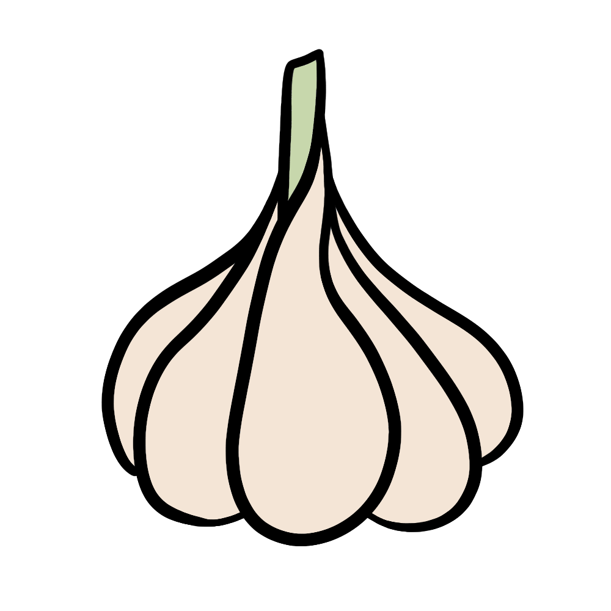

How to grow Garlic
A Step by step Guide
Garlic is a low-maintenance crop that thrives in a variety of climates. It requires minimal space and care, making it an excellent addition to any garden. Whether planted in containers or garden beds, garlic provides a rewarding harvest with a robust flavor. Follow this guide to grow your own fresh garlic at home.
Difficulty Rating: Easy
Best Season to Grow: Fall and Early Spring
Can Be Grown: Both Indoors and Outdoors
Supplies Needed to Grow Garlic
Garlic bulbs (organic, untreated)
Well-draining, nutrient-rich soil
Compost or balanced fertilizer (5-10-10)
Garden trowel
Watering can or hose
Mulch (straw, leaves, or wood chips)
Raised garden bed or deep containers (for small spaces)
Setting Up Your Garlic Garden
Choosing the Right Location
Sunlight: Garlic thrives in full sun, requiring at least 6-8 hours of direct sunlight per day.
Soil: Use loose, well-draining soil rich in organic matter, with a pH between 6.0 and 7.5.
Spacing: Plant garlic cloves 4-6 inches apart in rows spaced 12 inches apart.
Indoor Setup: If growing indoors, use deep containers (at least 8 inches deep) with good drainage.
Preparing the Soil
Loosen the soil to a depth of at least 12 inches to encourage proper root growth.
Mix compost into the soil to provide essential nutrients.
Avoid compacted or heavy clay soils, as they can hinder bulb development.
Planting Garlic
Choosing Cloves: Select large, healthy cloves from an organic garlic bulb.
Planting Depth: Bury each clove 2 inches deep with the pointed end facing upwards.
Watering After Planting: Lightly water the soil to keep it consistently moist but not soggy.
Caring for Your Garlic Plants

Watering
Keep the soil evenly moist but not waterlogged, providing 1 inch of water per week.
Reduce watering as the bulbs mature (around 2-3 weeks before harvesting).

Fertilizing
Apply a balanced fertilizer at planting time.
Side-dress with compost or an organic fertilizer every 4-6 weeks during the growing season.

Mulching & Weed Control
Apply a thick layer of mulch to retain moisture and suppress weeds.
Remove weeds regularly to prevent competition for nutrients.

Pest and Disease Prevention
Watch for pests such as onion thrips, nematodes, and aphids.
Use insecticidal soap or neem oil to deter pests.
Rotate crops yearly to prevent soil-borne diseases like white rot and rust.

Harvesting
Garlic is ready to harvest in 8-9 months, typically when the lower leaves start to turn yellow and dry out.
Carefully loosen the soil and pull the bulbs out when they are mature.
Cure the harvested bulbs by drying them in a warm, shaded, well-ventilated area for 2-3 weeks before storage.
By following these steps, you can successfully grow garlic and enjoy fresh, homegrown bulbs for cooking and medicinal use. Happy gardening! 🌱